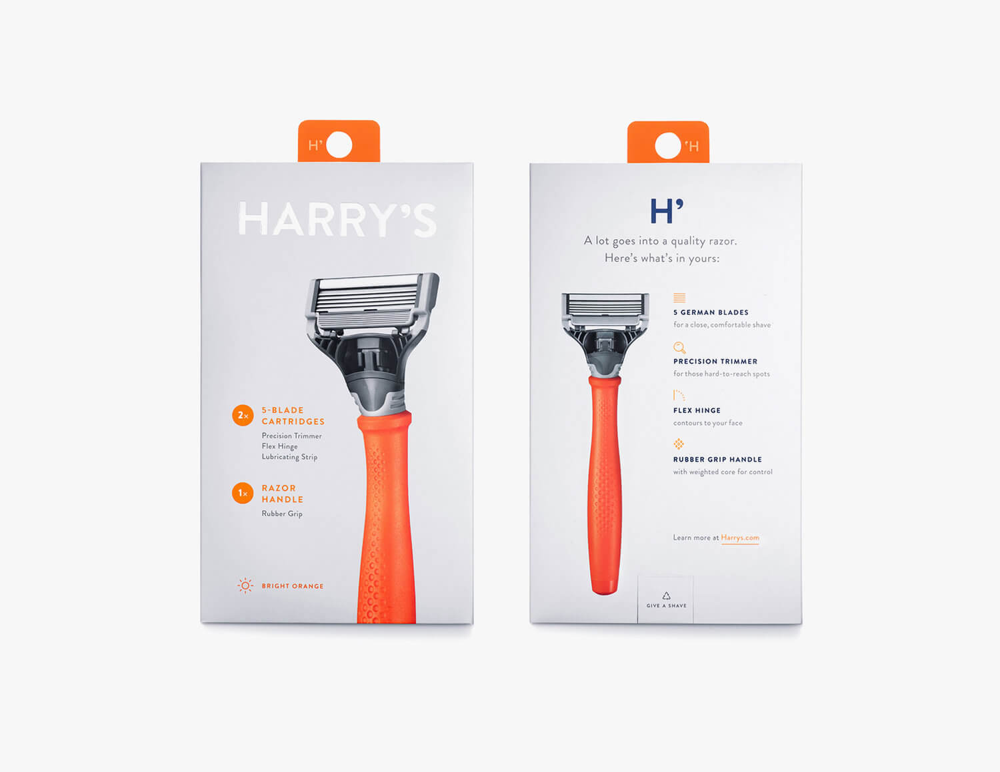

Urban Threads
A Visual Series with Andile Ndunge
This two-part visual series was designed to fuse fashion and storytelling through the lens of Durban’s unique urban identity. Partnering with renowned influencer Andile Ndunge, we crafted a campaign that not only showcased style but also celebrated the city's rhythm, energy, and hidden gems.

Central Pulse
Shot across key landmarks in central Durban, this video series captures Andile moving through the city's bustling core – from the historic City Hall to the vibrant Warwick Junction. With a strong editorial approach, we highlighted how fashion blends into the everyday energy of the city, using natural textures, real people, and the raw authenticity of urban life to complement each look. The result is a seamless conversation between style and setting.
Key Features:
- Street-style visuals with cinematic movement
- Dynamic urban sound design layered with ambient city noise
- Fast-paced editing to mirror the rhythm of downtown Durban

Denim in Uncommon Places – Levi’s x Andile
This second series focused on Levi’s jeans, placing Andile in spaces not typically associated with fashion shoots—think empty rooftops, tucked-away alleys, underpass tunnels, forgotten courtyards, and concrete industrial backdrops. These settings contrasted beautifully with the clean, timeless silhouette of Levi’s denim, creating a gritty-yet-refined aesthetic.
Key Features:
- High-contrast color grading to emphasize denim tones
- Photographs captured at golden hour and dusk for a moody vibe
- Intimate, documentary-style shots juxtaposed with wide architectural frames

Outcome
TThe series received high engagement across social platforms, resonating with both fashion-forward audiences and locals who recognized their city in a new, elevated light. It positioned Andile as a style authority rooted in his hometown, while reinforcing Levi’s as a brand that aligns with authenticity and cultural relevance.
